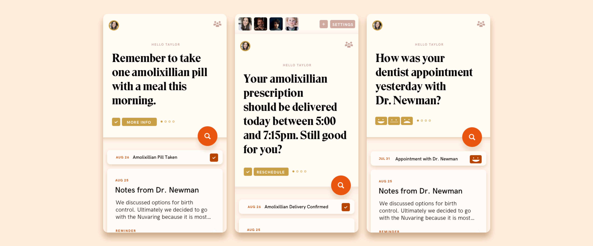

A-Okay
PRODUCT DESIGN
A-Okay is a platform that restores the eroded trust between doctors and patients.
By matching doctors and patients according to personal values and
increasing the transparency of medical records, the platform
propels the patient experience into the modern world.
The problem?
Doctors don't trust patients. They worry about losing everything
because of a malpractice lawsuit.
They worry about being punished for breaching patient confidentiality.
They worry they might be asked to do something that opposes their personal beliefs.
And they worry most of their patients won't follow their reccomendations.
Patients don't trust doctors either. They worry that doctors take commission
from pharmicutical companies and may not always diagnose with
their best interest in mind.
They worry doctors make money by keeping them unwell.
They worry doctors will patronize their concerns.

Through partnerships with phyicians, hospitals & pharmacies, a-okay
automatically syncs data from doctor portals, pharmacies, insurance
portals and personal health trackers and then allows patients to quickly
and easily share parts of their diverse medical history.
A filterable consolidated timeline helps patients to keep all of
their medical history in one place. This leads to higher accountability
as patients can now make informed educated decisions about their medical care.

When the patient opens the app, they are greeted with pressing notifications -
such as reminders to take prescriptions, reviews of doctor visits ect.
Notes from doctor visits, prescriptions, co-payments, test results, appointments ect. appear in the
medical history timeline below. It can be filtered easily by type of entry, doctor ect.
And users can share entries or create reminders about entries on their medical timeline.
In addition to managing their medical history,
users can manage their medical team on the app.
When the user searches for a new doctor, they fill out a quick
questionaire containing moral questions that identify their values. This
helps them find a doctor with similar mindset that will be the best
partner in their healthcare.
They are then given a list of doctors with similar values that they can
then book appointments with and add to their team directory.
In contrast the the cold, clinical feeling of most medical brands,
the visual language uses mix of organic Matisse-inspired torn paper illustrations, vintage
70s serif fonts & a warm color pallete combine to evoke a sense of trust,
making the brand seem approachable and like it has stood the test of time.